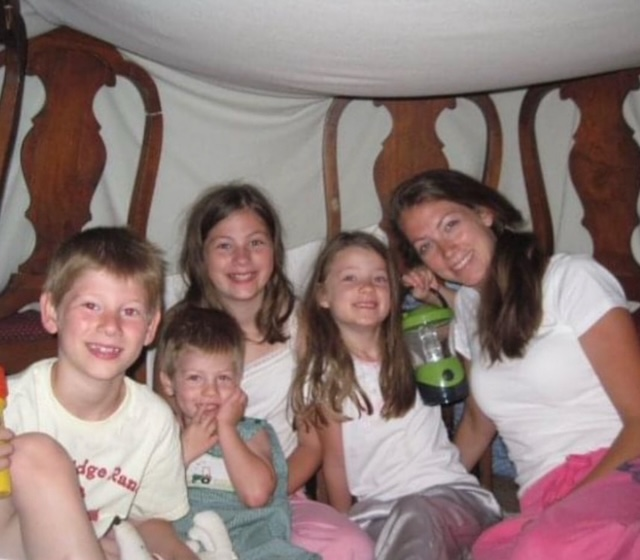

This movie series has always been one of my favorite
I remember when I was younger my mother would gather my siblings and I into my older sisters room so she could read to us the chronicles of Narnia series. My imagination would run wild with the idea of a magical world where talking animals lived. I wished so badly to meet Aslan and feel his soft coat. When I got a little older my mom let me watch the Disney movie series. This was all it took for me to become obsessed. I spent 3 years hyper focused on the Narnia series and was determined to know everything about it I could. Although my initial infatuation has ended, I still like to watch these movies at least once a year. These movies made my life feel a little more magical and I plan I to set up my future childrens nursery to be Narnia themed so they can grow up with the same magical feeling I did.
Here is a photo of me and my siblings during the time mom was reading us the Narnia series.
